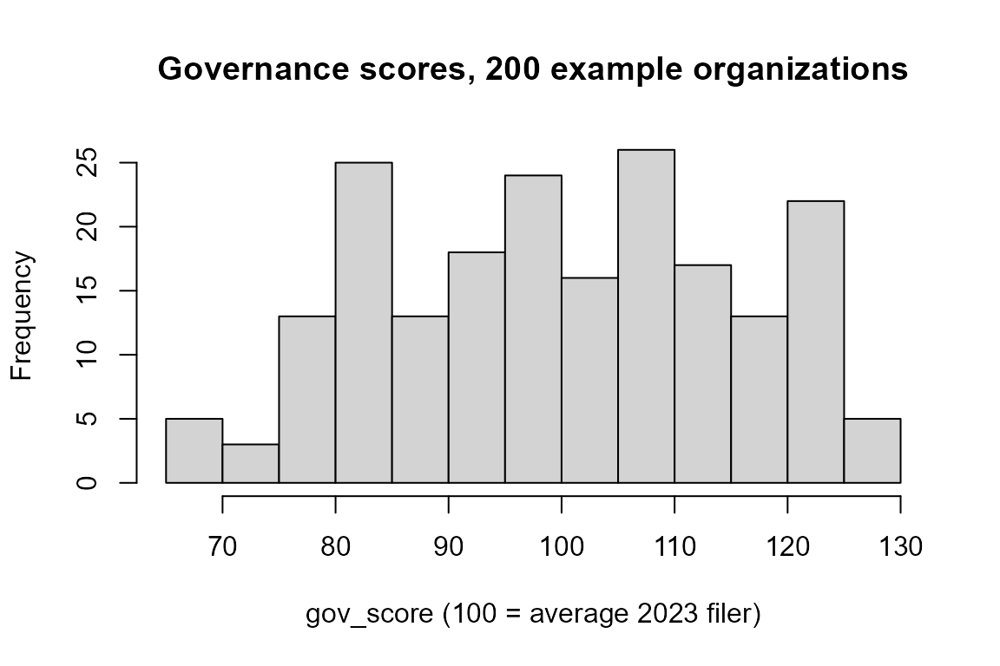

library( governance )
library( dplyr )The governance package scores nonprofit governance
from the IRS Form 990. Since the 2008 redesign, Part VI of the 990 asks
every full filer about its board, its written policies and its
disclosure practices, and Parts IV and XII record audits and financial
oversight. The package turns those answers into 16 indicators of
recommended practice and combines them into a single governance index,
gov_score.
The index comes from an item response model fit to every 501(c)(3) organization that e-filed a full Form 990 for tax year 2023 (about 271,000 organizations). Its parameters are fixed, so a score from any year is on the same scale: 0 is the average 2023 filer, and one unit is one standard deviation of governance among 2023 filers.
The workflow has two steps:
-
get_features()codes the raw 990 fields as binary practice items. -
get_scores()scores the items with the 2023 model.
Step 1: Get input data
get_features() expects one row per filing with the raw
efile fields from Form 990 Parts IV, VI and XII and Schedule M. The
companion panel990
package retrieves them; get_governance_data( years = 2023 )
returns a data frame ready for the next step. See
vignette("download-data") for the tables and fields.
The package also ships dat_example, a 5,000-organization
sample of raw 2022 fields, so you can try the workflow without
downloading anything.
Step 2: Code the practice items
get_features() adds 16 GI_* columns, one
per practice, coded 1 when the organization reports the practice, 0 when
it does not and NA when the question was left blank. It
also adds five RISK_* disclosure indicators and the 12
features used by the older 2018 model.
features <- get_features( dat_example )
# share of organizations reporting each practice
features |>
summarise( across(starts_with("GI_"), \(x) mean(x, na.rm = TRUE)) ) |>
tidyr::pivot_longer( everything(), names_to = "item", values_to = "share" ) |>
knitr::kable( digits = 2 )| item | share |
|---|---|
| GI_REVIEW_AUDIT | 0.50 |
| GI_AUDIT | 0.39 |
| GI_AUDIT_CMTE | 0.38 |
| GI_ACCRUAL | 0.64 |
| GI_INDEP_MAJOR | 0.83 |
| GI_MINUTES_BOARD | 0.92 |
| GI_MINUTES_CMTE | 0.81 |
| GI_990_BOARD | 0.69 |
| GI_COI | 0.64 |
| GI_COI_DISCLOSE | 0.58 |
| GI_COI_MONITOR | 0.54 |
| GI_WHISTLE | 0.48 |
| GI_RETENTION | 0.52 |
| GI_COMP_CEO | 0.40 |
| GI_COMP_OTH | 0.28 |
| GI_990_WEB | 0.10 |
Step 3: Calculate the scores
get_scores() appends the governance score and its
standard error, four specific-factor scores and gov_count,
the number of the 16 practices the organization reports.
scores <- get_scores( features )
vars <- c( "ORG_NAME_L1", "gov_score", "gov_score_se", "gov_count" )
scores[ , vars ] |>
head() |>
knitr::kable( digits = 2 )| ORG_NAME_L1 | gov_score | gov_score_se | gov_count | |
|---|---|---|---|---|
| 849 | BLUE RIDGE WOMENS CENTER INC | 0.85 | 0.44 | 12 |
| 2532 | SPECTRUM THEATRE ENSEMBLE | -0.72 | 0.30 | 7 |
| 2699 | WESTERN INSTITUTE FOR VETERANS RESEARCH | 1.03 | 0.51 | 14 |
| 2478 | Spida Inc | 0.13 | 0.20 | 10 |
| 531 | Oak School of Delray Beach Inc | -1.00 | 0.43 | 4 |
| 3673 | GROW WELLNESS FOUNDATION | -1.94 | 0.65 | 0 |
hist( scores$gov_score,
main = "Governance scores, 200 example organizations",
xlab = "gov_score (0 = average 2023 filer)" )
Where to go next
-
vignette("overview"): how governance practices vary by size, subsector, state and year across all 501(c)(3) filers. -
vignette("governance-workflow"): a fuller walk-through of the outputs. -
vignette("making-gov-scores"): how the items were chosen and the model fit. -
vignette("download-data"): retrieving 990 data with panel990.